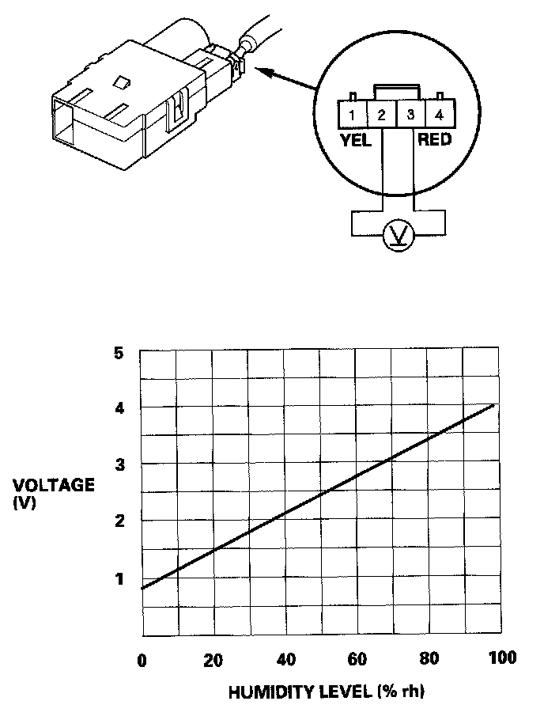
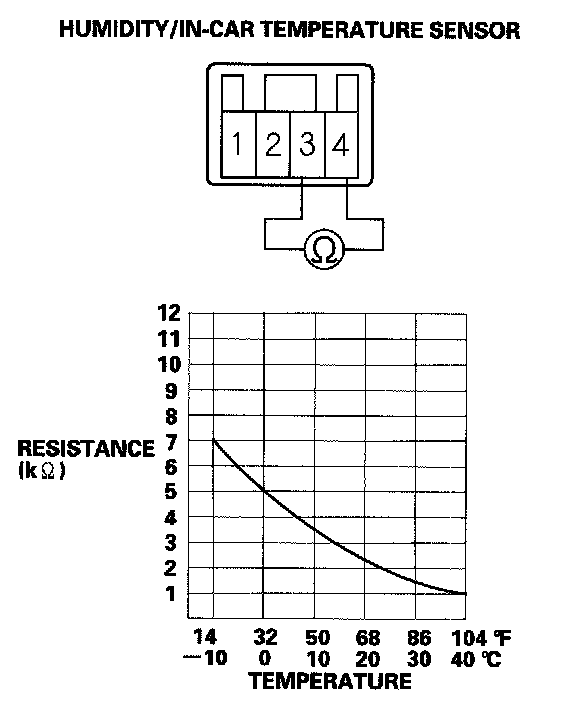

Humidity/In-Car Temperature Sensor Test
Humidity/In-car Temperature Sensor TestHumidity Sensor Test
1. Remove the humidity/in-car temperature sensor.
2. Connect the humidity/in-car temperature sensor 4P connector.

3. Turn the ignition switch ON (II). Measure the voltage between the terminals with the (+) probe on the No. 2 terminal and the ( - ) probe on the No. 3 terminal with the connector connected.
4. If the voltage is not as specified, replace the humidity/in-car temperature sensor.
In-car Temperature Sensor Test
1. Remove the humidity/in-car temperature sensor.
2. Connect the humidity/in-car temperature sensor 4P connector.
3. Test the humidity/in-car temperature sensor while holding it in front of the dashboard center vent.
- Measure the resistance with the system set to Max Cool.
- Measure the resistance with the system set to Max Hot.

4. Compare the resistance reading between the No. 4 and No. 3 terminals of the humidity/in-car temperature sensor with the specifications shown in the graph; the resistance should be within the specifications.
5. If the resistance is not as specified, replace the humidity/in-car temperature sensor.